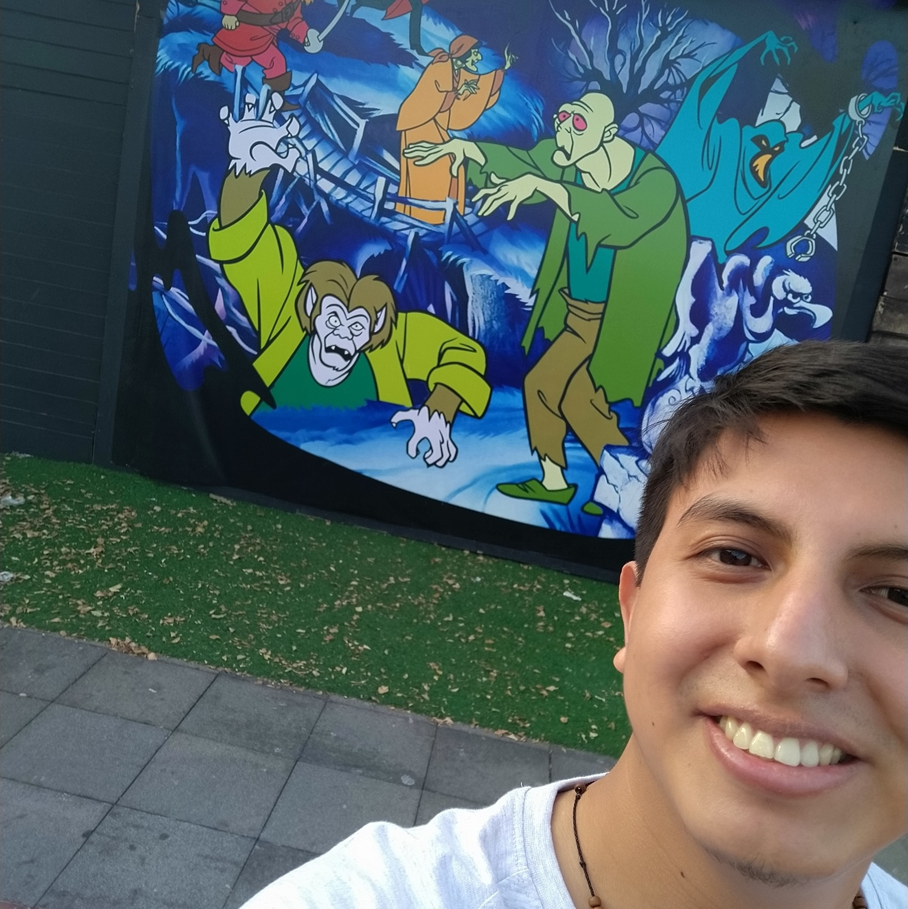

Información personal
Hola!, soy André Jaramillo, pero muchos me dicen únicamente andré o "andrew", resido en la ciudad de Guayaquil pero originalmente soy de la ciudad de Machala, tengo 28 años y curso la carrera de Ing. en Tecnologías de la Inf.
Me considero un programador con una creciente experiencia, laboro en una empresa de índole financiera como desarrollador web, aunque actualmente me encuentro en un pequeño proyecto de marketing digital.
Me considero autodidacta en muchos aspectos y al mismo tiempo en la aprendizaje colaborativo en donde cada uno aprenda algo nuevo de quien esté esté dispuesto a compartir su conocimiento.

© UTPL - Desarrollo Web